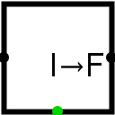

Entiers vers virgule flotante
| Librairie : | Arithmétique |
| Introduction : | 3.5 |
| Apparence : |  |
Comportement
Ce composant renvoie une valeur en virgule flottante sur la sortie est, qui correspond à la valeur entière qu'il reçoit sur l'entrée ouest.
Il dispose d'une sortie d'erreur au sud, qui est mise à 1 si le composant reçoit un signal error (E) ou undefined(U).
Broches
- Bord ouest :
- Entrée : Recoit la valeurs entières à convertir. La largeur de donnée en bits correspond à l'attribut argeur des données.
- Bord est :
- Sortie : Valeur en virgule flottante correspondant à la valeur de l'entrée se positionne sur NaNf en cas d'erreur. La largeur des bits correspond à l'attribut Dimension flottant.
- Bord sud :
- Sortie : Erreur, prend la valeur 1 si le convertisseur reçoit un signal d'erreur (E), indéfini (U). La largeur de donnée est de 1.
Attributs
Lorsque le composant est sélectionné ou en cours d'ajout, les touches Alt-0 à Alt-9 modifient son attribut Dimension flottant. Seulement 32 ou 64 bits.
- Largeur des données
- La largeur de donnée en bit de l'entrée.
- Dimension flottant
- La largeur de donnée en bit du composant 32 ou 64 bits.
Poke Tool Behavior
None.
Text Tool Behavior
None.
Back to Library Reference